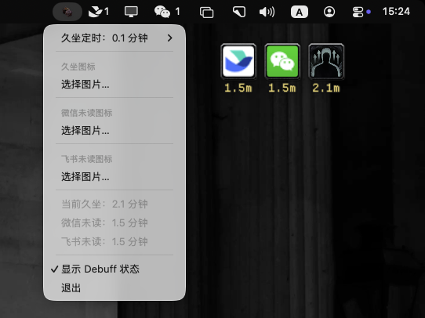
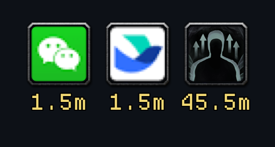
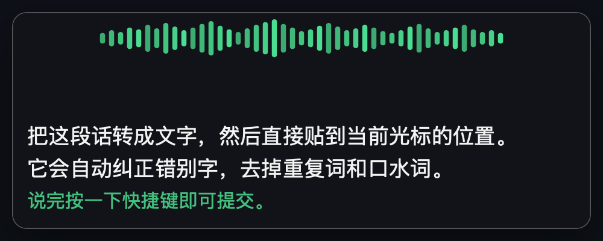
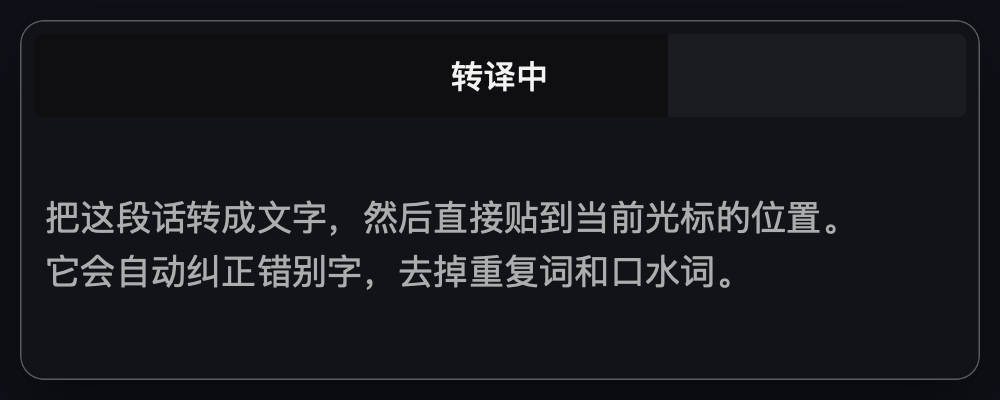

不是又一个番茄钟，是把生理风险可视化
久坐带来的代谢与心血管风险，并不会因为你“每天锻炼 30 分钟”就消失。debuff 做的事情很简单：把不可感知的久坐时长，变成屏幕上一枚看得见、还会计时的 debuff。
它同时接住了另外两件常被忽略的“状态”：办公软件里堆着的未读消息，以及脑子里想说的话。所有信息都以同一种游戏化的方式呈现——外框、技能图标，以及图标下方保留一位小数的计时（45.5m）。
- 计时从启动或双击清除后重新开始
- 双击 debuff 浮窗即清除状态、重新计时
- 每一种 debuff 都可以换成你自己的图标

↑ 实机运行截图：菜单栏设置菜单 + 桌面上的 debuff 浮窗
三个 debuff，一个菜单栏
每件事都在你最需要被提醒的那一刻，用同一套语言出现。
SEDENTARY坐太久，就给你挂个 debuff
启动后自动开始计时，超过你设定的阈值，桌面上就会出现仿魔兽风格的浮窗：外框 + 技能图标 + 计时。计时以分钟为单位，保留一位小数，带单位 m。
- 阈值可在菜单里调整（菜单栏 → 久坐定时）
- 双击浮窗清除 debuff，并重新开始计时
- 久坐图标可换成任意本地图片

WECHAT / FEISHU未读不清，也是一种持续 debuff
读取微信、飞书的 Dock 角标：当未读出现并持续超过阈值，同样弹出一个 debuff 浮窗。自最近一条新消息起计时，图标可分别自定义为微信 / 飞书或其他任意图片。
- 微信、飞书各自独立计时与图标
- 多枚浮窗按出现顺序自动排列，久坐始终在最右
- 需要「辅助功能」权限以读取 Dock 角标
DICTATION按下快捷键，说完就贴到光标处
全局快捷键唤起麦克风，本地 STT 服务实时转写，并把文字直接粘贴到你当前光标的位置。说了停顿达设定时长就自动切段，支持「边说边粘」。
- 圆角波形指示条跟随鼠标：激活绿、待命灰，实时跳动
- VAD 自动切段，临近上限显示 5→1 倒计时
- 说「发送」即回车，说「over」切到待命
- 锁屏自动停麦，解锁自动恢复；可选指定麦克风

CLEAN UP转译 → 清整理，上屏即成品
转写不是终点。启用「清整理」后，每次转写结果会交给大模型纠正错别字、删除重复词与口水词、补全标点；整理完成才允许提交，确保贴上去的是一段可用的文字。整个过程由一条平滑的进度条呈现。
- OpenAI 兼容的
/v1/audio/transcriptions接口 - 清整理提示词可编辑，API Key 只存本机
- 语音日记：激活语音逐条写入桌面「语音日记」
- 按 100 字/分钟折算「累计节约时间」

本地 ASR：Qwen3-ASR 1.7B
语音输入靠一台跑在本机的 OpenAI 兼容转写服务「听懂」——llama.cpp + Metal 推理。配套服务见 github.com/sincebyte/LocalAudioSTT（千问 Qwen3-ASR 1.7B）。
零边际成本
离线推理，不按量计费；一次部署，长期使用没有 API 支出。
体积可控
bf16 约 4.7GB、16GB 内存够用；换 Q8_0 量化约 2.5GB，内存减半、速度约快一倍。
# 三步跑起本地 ASR 服务 git clone https://github.com/sincebyte/LocalAudioSTT.git cd LocalAudioSTT ./build-llama-server.sh --install # 编译带 Metal 的引擎 ./download-models.sh # 拉 Qwen3-ASR-1.7B（约 4.7GB） ./start-server.sh # 对外服务默认 127.0.0.1:8011
服务就绪后，在 debuff 菜单「设置 → STT 服务地址」里填
http://127.0.0.1:8011/v1/audio/transcriptions 即可。地址可自定义，任何 OpenAI 兼容的
/v1/audio/transcriptions 服务都能替代。
# 1. 克隆仓库并编译运行（Release）
git clone https://github.com/sincebyte/debuff.git
cd debuff
swift build -c release
./.build/release/SedentaryDebuff
# 2. 打包为 .app，拖入「应用程序」 ./scripts/package-macos-app.sh # 产物 dist/debuff.app cp -R dist/debuff.app /Applications/
# 3. 接入本地 ASR 服务（见上方「本地 ASR」） # 服务对外地址（OpenAI 兼容）： http://127.0.0.1:8011/v1/audio/transcriptions
- 01系统：macOS 13 或更高版本
- 02工具链：Swift 5.9+（随 Xcode 或 Command Line Tools 安装）
- 03语音输入：一个本地 OpenAI 兼容 STT 服务（Qwen3-ASR 1.7B，见上方「本地 ASR」）
- 04权限：麦克风（录音）、辅助功能（读取角标 + 模拟 ⌘V 粘贴）
建议运行脚本打包出的 dist/debuff.app，权限提示才能正常弹出。